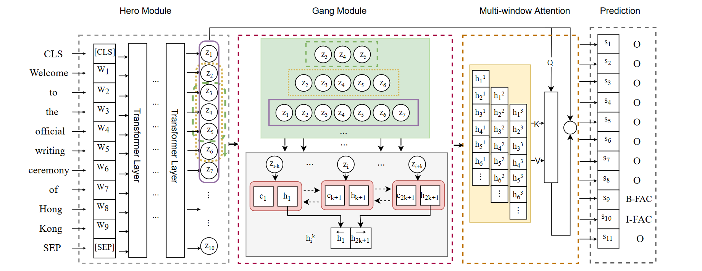

Hero-Gang Neural Model For Named Entity Recognition
完成时间：2023-11-30
来自：ACL 2022
双模块Hero-Gang model
具体概述
命名实体识别（NER）是NLP中一项基础而重要的任务，旨在从自由文本中识别命名实体（NEs）。近年来，由于Transformer模型中应用的多头注意力机制可以有效地捕获更长的上下文信息，基于Transformer的模型已成为主流方法，并在该任务中取得了显著的性能。不幸的是，尽管这些模型可以捕获有效的全局上下文信息，但它们在局部特征和位置信息提取方面仍然受到限制，这在NER中至关重要。为了解决这一局限性，我们提出了一种新的Hero-Gang神经结构（HGN），包括Hero和Gang模块，以利用全局和局部信息来促进NER。
具体来说，Hero 模块由基于 Transformer 的编码器组成，以保持自注意力机制的优势，而 Gang 模块则利用多窗口循环模块在 Hero 模块的指导下提取局部特征和位置信息。然后，所提出的多窗口注意力有效地结合了全局信息和多个局部特征来预测实体标签。在几个基准数据集上的实验结果验证了所提模型的有效性。
方法

（1）Hero 模块：
muti-head self-Attention 使用的就是基于Transformer的序列Encoder，比如说BERT、BioBERT等；然后将特征输入到Gang模块，提取局部上下文特征及其对应的位置信息
（2）Gang模块：
· LSTM、GRU、RNN从序列中提取局部和相对位置信息（RS--循环结构）
· 为了强调单个单词的局部特征，保证不受到长距离的影响--->构造可一个固定长度的滑动窗口，生成较短的子序列，这样更容易被RS建模
· 利用多个不同窗口大小的滑动窗口，来提取更丰富的局部特征
（3）Muti-windows Attention：
· 应用多窗口注意力，将来自Hero模块的全局上下文信息和来自Gang模块的局部特征进行结合
· 提出两种注意力：MLP-Attention、DOT-Attention